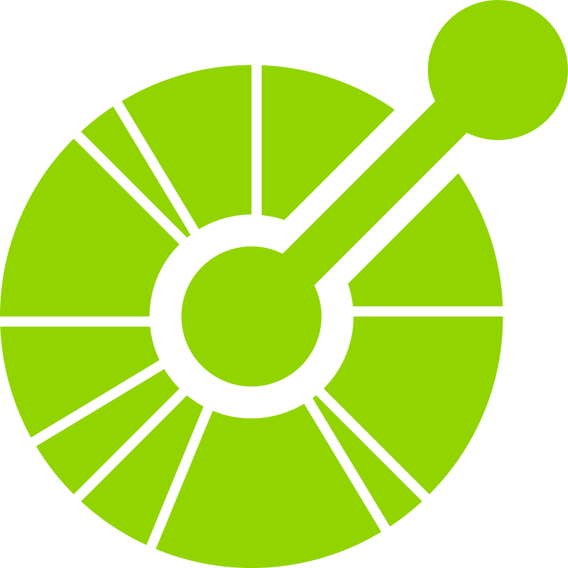
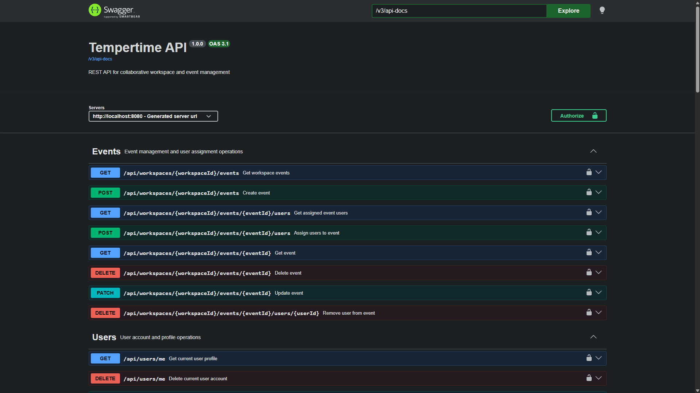
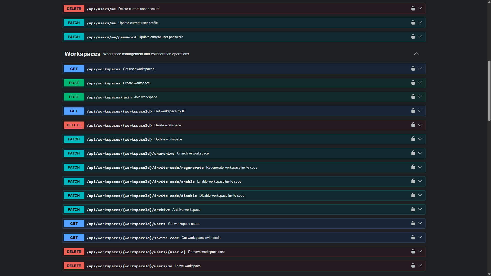
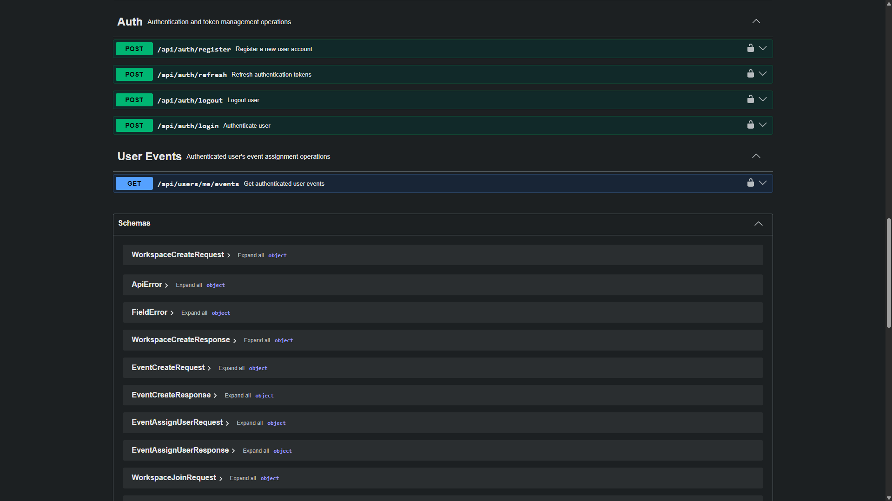
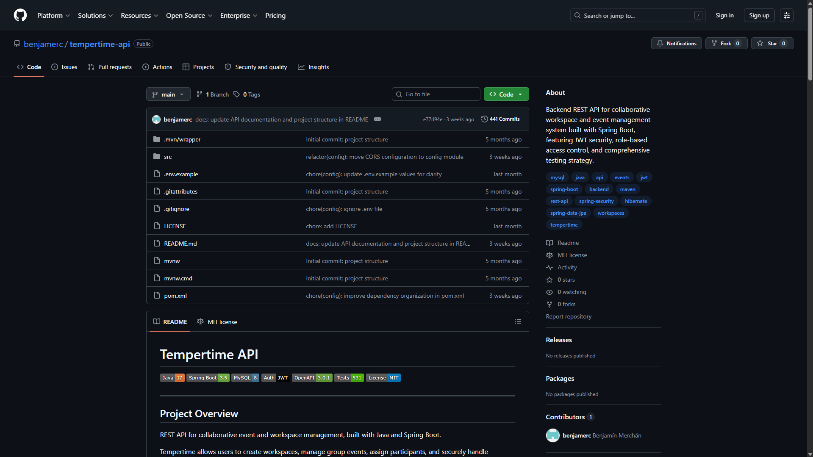

Tecnologías

OpenAPITécnico Universitario en Programación (UTN), orientado al desarrollo backend con Java y Spring. Cuento con conocimientos aplicados en proyectos prácticos y busco mi primera oportunidad profesional como desarrollador backend Java.

OpenAPI



API REST desarrollada con Java y Spring Boot para la gestión colaborativa de grupos y eventos.
Implementa autenticación JWT con rotación de refresh tokens, control de acceso basado en roles, sistema de invitaciones con codificación segura y manejo de zonas horarias.
Expone 32 endpoints REST documentados con OpenAPI/Swagger y documentación técnica de 55 páginas. El proyecto cuenta con 531 pruebas automatizadas entre tests unitarios, de integración y end-to-end.
Frontend de demostración desarrollado con React para recorrer los principales flujos de Tempertime API.
Universidad Tecnológica Nacional · 2023 - 2026